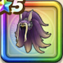

妖魔の艶髪
攻略班 9.0点 / 怪人系への耐性+5%物質系への耐性+5%怪人系への耐性+5%物質系への耐性+5%【ニンジャ】スキルの体技ダメージ+4%【夜間】ジバリア属性斬撃・体技ダメージ+2%ジバリア属性斬撃・体技ダメージ+8%
くわしい特徴
【レベル別習得スキル】 Lv1怪人系への耐性+5% Lv8物質系への耐性+5% Lv10【ニンジャ】スキルの体技ダメージ+4% Lv12【夜間】ジバリア属性斬撃・体技ダメージ+2% Lv12ジバリア属性斬撃・体技ダメージ+8% Lv15きようさ+10 Lv18怪人系への耐性+5% Lv20【ニンジャ】すべての状態異常成功率+3% Lv23物質系への耐性+5% Lv25すばやさ+6 【限界突破スキル】 1凸攻撃力+10 2凸すばやさ+12 3凸守備力+10 4凸さいだいHP+12